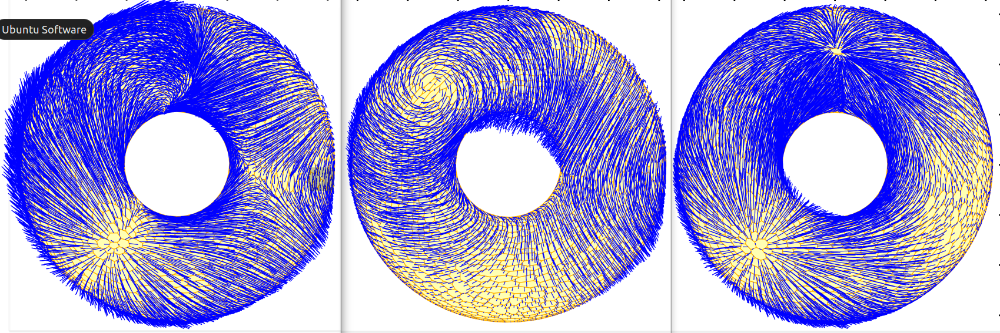

|
Department of Numerical Mathematics Charles University in Prague |
Lecture room K433KNM 4th floor, Sokolovská 49/83, 186 75 Praha 8 |
We investigate discrete counterparts of differential operators acting on discretized curved or domains. The aim is to develop structure-preserving numerical methods and to build computational frameworks that would allow for efficient solving PDEs on non-flat domains. In order to meet this goal, we employ cellular complexes and interpret a mesh as a chain and functions (or more broadly k-forms) as cochains, all notions borrowed from algebraic topology. Then with the discrete exterior derivative (coboundary operator) we get cohomology classes on our discrete differential forms and thus define a discrete version of the de Rham complex. Moreover, equipped with a discrete Hodge star operator, we define a codifferential and can translate several PDEs on tensors into the language of differential forms.

| April 28 | TBA |
| April 29 | TBA |